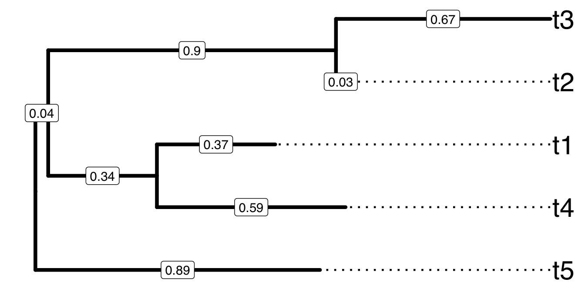
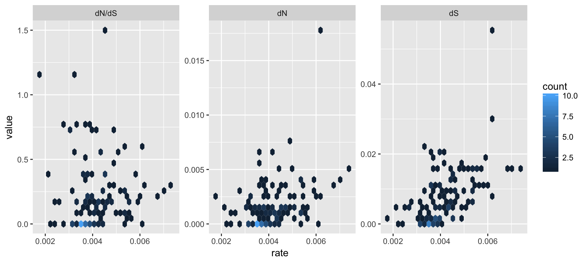
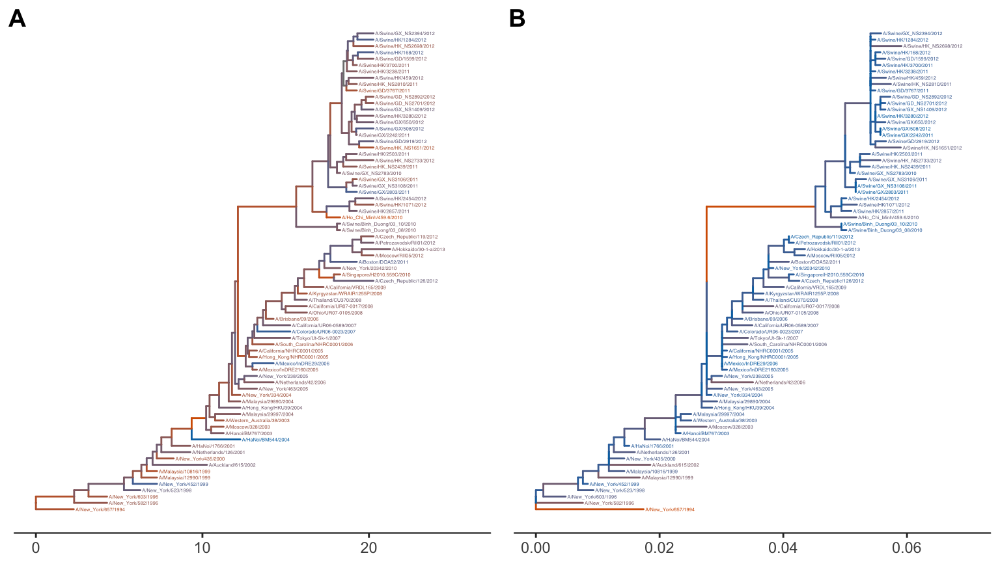
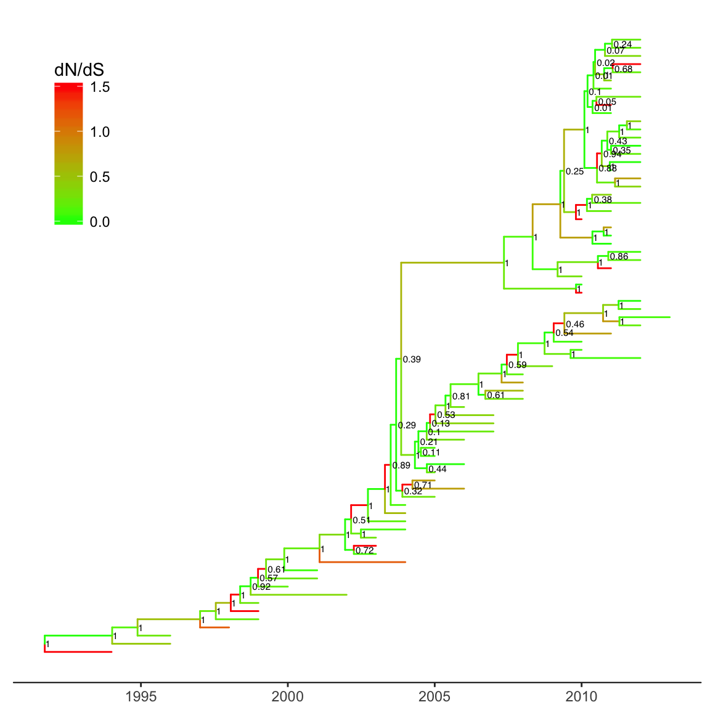

Chapter 3 Parsing phylogenetic trees with associated data: treeio
3.1 Introduction
Phylogenetic trees are commonly used to present evolutionary relationships of species including influenza virus. Information associated with taxon species/strains may be further analyzed in the context of the evolutionary history depicted by the phylogenetic tree. For example, host information of the influenza virus strains in the tree could be studied to understand the host range of a virus lineage (Parrish, Murcia, and Holmes 2015). Moreover, such meta-data (e.g., isolation host, time, location, etc.) directly associated with taxon strains are also often subjected to further evolutionary or comparative phylogenetic models and analyses, to infer their dynamics associated with the evolutionary or transmission processes of the virus. For examples, time and geographic information of the influenza virus strains could be used for estimating virus spread in temporal and spatial scales (Lam, Hon, and Tang 2010). All these meta-data are stored either as the annotation data associated with the nodes or branches, and are often produced in inconsistent format by different analysis programs. Therefore, the growth of analysis tools and models available introduces a challenge to integrate different varieties of data and analysis results from different sources for an integral analysis on the same phylogenetic tree background. This chapter describes the R package, treeio, developed in this thesis project to deal with this challenge. To begin with, the existing tree file formats and analysis output files are introduced.
There are several file formats designed to store phylogenetic trees and the data associated with the nodes and branches. The three commonly used formats are Newick1, NEXUS (D. R. Maddison et al. 1997) and Phylip (Felsenstein 1989). Some formats (e.g., NHX) are extended from Newick format. Newick and NEXUS formats are supported as input by most of the software in evolutionary biology, while some of the software tools output newer standard files (e.g., BEAST and MrBayes) by introducing new rules/data blocks for storing evolutionary inferences. On the other cases (e.g., PAML and r8s), output log files are only recognized by their own single software.
3.1.1 Newick tree format
The Newick tree format is the standard for representing trees in computer-readable form.
A sample tree for demonstrating Newick text to encode tree structure. Tips were aligned to right hand side and branch lengths were labelled on the middle of each branch." alt="A sample tree for demonstrating Newick text to encode tree structure. Tips were aligned to right hand side and branch lengths were labelled on the middle of each branch." width="672" />
The rooted tree shown in Figure ?? can be represented by the following sequence of characters as a newick tree text.
(t5:0.89,((t4:0.59,t1:0.37):0.34,(t2:0.03,t3:0.67):0.9):0.04); The tree text ends with semicolon. Internal nodes are represented by a pair of matched parentheses. Between the parentheses are descendant nodes of that node. For instance (t4:0.59, t1:0.37) represents the parent node of t4 and t1 that are the immediate descendants. Sibling nodes are separated by comma and tips are represented by their names. A branch length (from parent node to child node) is represented by a real number after the child node and preceded by a colon. Singular data (e.g., bootstrap values) associated with internal nodes or branches maybe encoded as node label and represented by the simple text/numbers before the colon.
Newick tree format was developed by Meacham in 1984 for the PHYLIP (Retief 2000) package. Newick format is now the most widely used tree format and used by PHYLIP, PAUP* (Wilgenbusch and Swofford 2003), TREE-PUZZLE (Schmidt et al. 2002), MrBayes and many other applications. Phylip tree format contains Phylip multiple sequence alignment (MSA) with a corresponding Newick tree text that was built based on the MSA sequences in the same file.
3.1.2 NEXUS tree format
The NEXUS format incorporates Newick tree text with related information organized into separated units known as blocks. A NEXUS block has the following structure:
#NEXUS
...
BEGIN characters;
...
END;For example, the above example tree can be saved as a following NEXUS format:
#NEXUS
[R-package APE, Wed Nov 9 11:46:32 2016]
BEGIN TAXA;
DIMENSIONS NTAX = 5;
TAXLABELS
t5
t4
t1
t2
t3
;
END;
BEGIN TREES;
TRANSLATE
1 t5,
2 t4,
3 t1,
4 t2,
5 t3
;
TREE * UNTITLED = [&R] (1:0.89,((2:0.59,3:0.37):0.34,
(4:0.03,5:0.67):0.9):0.04);
END;Comments can be placed by using square brackets. Some blocks can be recognized by most of the programs including TAXA (contains information of taxa), DATA (contains data matrix, e.g., sequence alignment) and TREE (contains phylogenetic tree, i.e., Newick tree text). Notably, blocks can be very diversed and some of them are only be recognized by one particular program. For example NEXUS file exported by PAUP* has a paup block which contains PAUP* commands, whereas FigTree exports NEXUS file with a figtree block that contains visualization settings. NEXUS organizes different types of data into different blocks, whereas programs that support reading NEXUS can parse some blocks they recognized and ignore those they could not. This is a good mechanism to allow different programs to use the same format without crashing when unsupported types of data are present. Notably most of the programs only support parsing TAXA, DATA and TREE blocks, therefore a program/platform that could generically read all kinds of data blocks from the NEXUS would be useful for phylogenetic data integration.
The DATA block is widely used to store sequence alignment. For this purpose, user can store tree and sequence data in Phylip format which are essentially Phylip multiple sequence alignment and Newick tree text respectively. It is used in Phylogeny Inference Package (PHYLIP).
3.1.3 New Hampshire eXtended format
Newick, NEXUS and phylip are mainly designed to store phylogenetic tree and basic singular data associated with internal nodes or branches. In addition to the singular data annotation at branches and nodes (mentioned above), New Hampshire eXtended format (NHX), which is based on Newick (also called New Hampshire), was developed to introduce tags to associate multiple data fields with the tree nodes (both internal nodes and tips). Tags are placed after branch length and must be wrapped between [&&NHX and ] which makes it possible to compatible with NEXUS format as it defined characters between [ and ] as comments. NHX is also the output format of PHYLODOG (Boussau et al. 2013) and RevBayes (Höhna et al. 2016). A Tree Viewer (ATV) (Zmasek and Eddy 2001) is a java tool that supports displaying annotation data stored in NHX format, but this package is no more maintained.
Here is a sample tree from NHX definition document2:
(((ADH2:0.1[&&NHX:S=human], ADH1:0.11[&&NHX:S=human]):
0.05[&&NHX:S=primates:D=Y:B=100],ADHY:
0.1[&&NHX:S=nematode],ADHX:
0.12[&&NHX:S=insect]):0.1[&&NHX:S=metazoa:D=N],
(ADH4:0.09[&&NHX:S=yeast],ADH3:0.13[&&NHX:S=yeast],
ADH2:0.12[&&NHX:S=yeast],ADH1:0.11[&&NHX:S=yeast]):
0.1[&&NHX:S=Fungi])[&&NHX:D=N];3.1.4 Jplace format
In order to store the NGS short reads mapped onto a phylogenetic tree (for the purpose of metagenomic classification; illustrated with more details in Chapter 5), Matsen proposed jplace format for such phylogenetic placements (Matsen et al. 2012). Jplace format is based on JSON and contains four keys: tree, fields, placements, metadata and version. The tree value contains tree text extended from Newick tree format by putting the edge label in brackets (if available) after branch length and putting the edge number in curly braces after edge label. The fields value contains header information of placement data. The value of placements is a list of pqueries. Each pquery contains two keys: p for placements and n for name or nm for names with multiplicity. The value of p is a list of placement for that pqueries.
Here is a jplace sample file:
{
"tree": "(((((((A:4{1},B:4{2}):6{3},C:5{4}):8{5},D:6{6}):
3{7},E:21{8}):10{9},((F:4{10},G:12{11}):14{12},H:8{13}):
13{14}):13{15},((I:5{16},J:2{17}):30{18},(K:11{19},
L:11{20}):2{21}):17{22}):4{23},M:56{24});",
"placements": [
{"p":[24, -61371.300778, 0.333344, 0.000003, 0.003887],
"n":["AA"]
},
{"p":[[1, -61312.210786, 0.333335, 0.000001, 0.000003],
[2, -61322.210823, 0.333322, 0.000003, 0.000003],
[3, -61352.210823, 0.333322, 0.000961, 0.000003]],
"n":["BB"]
},
{"p":[[8, -61312.229128, 0.200011, 0.000001, 0.000003],
[9, -61322.229179, 0.200000, 0.000003, 0.000003],
[10, -61342.229223, 0.199992, 0.000003, 0.000003]],
"n":["CC"]
}
],
"metadata": {"info": "a jplace sample file"},
"version" : 2,
"fields": ["edge_num", "likelihood", "like_weight_ratio",
"distal_length", "pendant_length"
]
}Jplace is the output format of pplacer (Matsen, Kodner, and Armbrust 2010) and Evolutionary Placement Algorithm (EPA) (Berger, Krompass, and Stamatakis 2011). But these two programs do not contain tools to visualize placement results. Pplacer provides placeviz to convert jplace file to phyloXML or Newick formats which can be visualized by Archaeopteryx3.
3.1.5 Software outputs
RAxML (Stamatakis 2014) can output Newick format by storing the bootstrap values as internal node labels. Another way that RAxML supported is to place bootstrap value inside square brackets and after branch length. This could not be supported by most of the software that support Newick format where square brackets will be ignored.
BEAST (Bouckaert et al. 2014) output is based on NEXUS and it also introduce square brackets in the tree block to store evolutionary evidences inferred by BEAST. Inside brackets, curly braces may also incorporated if feature values have length more than 1 (e.g., HPD or range of substitution rate). These brackets are placed between node and branch length (i.e., after label if exists and before colon). Bracket is not defined in Newick format and is reserve character for NEXUS comment. So these information will be ignored for standard NEXUS parsers.
Here is a sample TREE block of the BEAST output:
tree TREE1 = [&R] (((11[&length=9.4]:9.38,14[&length=6.4]:
6.385096430786298)[&length=25.7]:25.43,4[&length=9.1]:
8.821663252749829)[&length=3.0]:3.10,(12[&length=0.6]:
0.56,(10[&length=1.6]:1.56,(7[&length=5.2]:5.19,
((((2[&length=3.3]:3.26,(1[&length=1.3]:1.32,
(6[&length=0.8]:0.83,13[&length=0.8]:0.8311577761397366)
[&length=2.4]:2.48917886025146)[&length=0.9]:
0.9416178372674331)[&length=0.4]:0.49,9[&length=1.7]:
1.757288031101215)[&length=2.4]:2.35,8[&length=2.1]:
2.1125745387283246)[&length=0.2]:0.23,(3[&length=3.3]:3.31,
(15[&length=5.2]:5.27,5[&length=3.2]:3.2710481368304585)
[&length=1.0]:1.0409443024626412)[&length=1.9]:
2.0372962536780435)[&length=2.8]:2.8446835614595685)
[&length=5.3]:5.367459711197171)[&length=2.0]:
2.0037467863383043)[&length=4.3]:4.360909907798238)
[&length=0.0];BEAST output can contain many different evolutionary inferences, depending of the analysis models defined in BEAUTi for running. For example in molecular clock analysis, it contains rate, length, height, posterior and corresponding HPD and range for uncertainty estimation. Rate is the estimated evolutionary rate of the branch. Length is the length of the branch in years. Height is the time from node to root while posterior is the Bayesian clade credibility value. The above example is the output tree of clock analysis and should contains these inferences. To save space, I only keep the length above.
MrBayes (J. P. Huelsenbeck and Ronquist 2001) is a program that uses Markov Chain Monte Carlo method to sample from the posterior probability distributions. Its output file annotates nodes and branches separately by two sets of square brackets. For example below, posterior clade probabilities for the node and branch length estimates for the branch:
tree con_all_compat = [&U] (8[&prob=1.0]:
2.94e-1[&length_mean=2.9e-1],10[&prob=1.0]:
2.25e-1[&length_mean=2.2e-1],((((1[&prob=1.0]:
1.43e-1[&length_mean=1.4e-1],2[&prob=1.0]:
1.92e-1[&length_mean=1.9e-1])[&prob=1.0]:
1.24e-1[&length_mean=1.2e-1],9[&prob=1.0]:
2.27e-1[&length_mean=2.2e-1])[&prob=1.0]:
1.72e-1[&length_mean=1.7e-1],12[&prob=1.0]:
5.11e-1[&length_mean=5.1e-1])[&prob=1.0]:
1.76e-1[&length_mean=1.7e-1],(((3[&prob=1.0]:
5.46e-2[&length_mean=5.4e-2],(6[&prob=1.0]:
1.03e-2[&length_mean=1.0e-2],7[&prob=1.0]:
7.13e-3[&length_mean=7.2e-3])[&prob=1.0]:
6.93e-2[&length_mean=6.9e-2])[&prob=1.0]:
6.03e-2[&length_mean=6.0e-2],(4[&prob=1.0]:
6.27e-2[&length_mean=6.2e-2],5[&prob=1.0]:
6.31e-2[&length_mean=6.3e-2])[&prob=1.0]:
6.07e-2[&length_mean=6.0e-2])[&prob=1.0]:
1.80e-1[&length_mean=1.8e-1],11[&prob=1.0]:
2.37e-1[&length_mean=2.3e-1])[&prob=1.0]:
4.05e-1[&length_mean=4.0e-1])[&prob=1.0]:1.16e
+000[&length_mean=1.162699558201079e+000])[&prob=1.0]
[&length_mean=0];To save space, most of the inferences were removed and only contains prob for clade probability and length_mean for mean value of branch length. The full version of this file also contains prob_stddev, prob_range, prob(percent), prob+-sd for probability inferences and length_median, length_95%_HPD for every branch.
The BEAST and MrBayes outputs are expected to be parsed without inferences (dropped as comments) by software that support NEXUS. FigTree supports parsing BEAST and MrBayes outputs with inferences that can be used to display or annotate on the tree. But from there extracting these data for further analysis is still challenging.
HyPhy (Pond, Frost, and Muse 2005) could do a number of phylogenetic analysis, including ancestral sequence reconstruction. For ancestral sequence reconstruction, these sequences and the Newick tree text are stored in NEXUS format as the major analysis output. It did not completely follow the NEXUS definition and only put the ancestral node labels in TAXA instead of external node label. The MATRIX block contains sequence alignment of ancestral nodes which cannot be referred back to the tree stored in TREES block since it does not contains node labels. Here is the sample output (to save space, only the first 72bp of alignment are shown):
#NEXUS
[
Generated by HYPHY 2.0020110620beta(MP) for MacOS(Universal Binary)
on Tue Dec 23 13:52:34 2014
]
BEGIN TAXA;
DIMENSIONS NTAX = 13;
TAXLABELS
'Node1' 'Node2' 'Node3' 'Node4' 'Node5' 'Node12' 'Node13' 'Node15'
'Node18' 'Node20' 'Node22' 'Node24' 'Node26' ;
END;
BEGIN CHARACTERS;
DIMENSIONS NCHAR = 2148;
FORMAT
DATATYPE = DNA
GAP=-
MISSING=?
NOLABELS
;
MATRIX
ATGGAAGACTTTGTGCGACAATGCTTCAATCCAATGATCGTCGAGCTTGCGGAAAAGGCAATGAAAGAATAT
ATGGAAGACTTTGTGCGACAATGCTTCAATCCAATGATCGTCGAGCTTGCGGAAAAGGCAATGAAAGAATAT
ATGGAAGACTTTGTGCGACAATGCTTCAATCCAATGATCGTCGAGCTTGCGGAAAAGGCAATGAAAGAATAT
ATGGAAGACTTTGTGCGACAATGCTTCAATCCAATGATCGTCGAGCTTGCGGAAAAGGCAATGAAAGAATAT
ATGGAAGACTTTGTGCGACAATGCTTCAATCCAATGATTGTCGAGCTTGCGGAAAAGGCAATGAAAGAATAT
ATGGAAGACTTTGTGCGACAATGCTTCAATCCAATGATCGTCGAGCTTGCGGAAAAGGCAATGAAAGAATAT
ATGGAAGACTTTGTGCGACAATGCTTCAATCCAATGATCGTCGAGCTTGCGGAAAAGGCAATGAAAGAATAT
ATGGAAGACTTTGTGCGACAATGCTTCAATCCAATGATCGTCGAGCTTGCGGAAAAGGCAATGAAAGAATAT
ATGGAAGACTTTGTGCGACAATGCTTCAATCCAATGATCGTCGAGCTTGCGGAAAAGGCAATGAAAGAATAT
ATGGAAGACTTTGTGCGACAATGCTTCAATCCAATGATCGTCGAGCTTGCGGAAAAGGCAATGAAAGAATAT
ATGGAAGACTTTGTGCGACAATGCTTCAATCCAATGATCGTCGAGCTTGCGGAAAAGGCAATGAAAGAATAT
ATGGAAGACTTTGTGCGACAATGCTTCAATCCAATGATCGTCGAGCTTGCGGAAAAGGCAATGAAAGAATAT
ATGGAAGACTTTGTGCGACAGTGCTTCAATCCAATGATCGTCGAGCTTGCGGAAAAGGCAATGAAAGAATAT
END;
BEGIN TREES;
TREE tree = (K,N,(D,(L,(J,(G,((C,(E,O)),(H,(I,(B,(A,(F,M)))))))))));
END;There are other applications that output rich information text that also contains phylogenetic trees with associated data. For example r8s (Sanderson 2003) output three trees in its log file, namely TREE, RATE and PHYLO for branches scaled by time, substitution rate, and absolute substitutions respectively.
Phylogenetic Analysis by Maximum Likelihood (PAML) (Z. Yang 2007) is a package of programs for phylogenetic analyses of DNA or protein sequences. Two main programs, BaseML and CodeML, implement a variety of models. BaseML estimates tree topology, branch lengths and substitution parameters using a number of nucleotide substitution models available, including JC69, K80, F81, F84, HKY85, T92, TN93 and GTR. CodeML estimates synonymous and non-synonymous substitution rates, likelihood ratio test of positive selection under codon substitution models (Goldman and Yang 1994).
BaseML outputs mlb file that contains input sequence (taxa) alignment and phylogenetic tree with branch length as well as substitution model and other parameters estimated. The supplementary result file, rst, contains sequence alignment (with ancestral sequence if perform reconstruction of ancestral sequences) and Naive Empirical Bayes (NBE) probabilities that each site in the alignment evolved. CodeML outputs mlc file that contains tree structure and estimation of synonymous and non-synonymous substitution rates. CodeML also output supplementary result file, rst, that is similar to BaseML except that site is defined as codon instead of nucleotide. Parsing these files can be tedious and would oftentimes need a number of post-processing steps and require expertise in programming (e.g. with Python4 or Perl5).
Introducing square brackets is quite common for storing extra information, including RAxML to store bootstrap value, NHX format for annotation, jplace for edge label and BEAST for evolutionary estimation, etc.. But the positions to place square brackets are not consistent in different software and the contents employ different rules for storing associated data, these properties make it difficult to parse associated data. For most of the software, they will just ignore square brackets and only parse the tree structure if the file is compatible. Some of them contains invalid characters (e.g. curly braces in tree field of jplace format) and even the tree structure can’t be parsed by standard parsers.
It is difficult to extract useful phylogeny/taxon-related information from the different analysis outputs produced by various evolutionary inference software, for displaying on the same phylogenetic tree and for further analysis. FigTree supports BEAST output, but not for most of other software outputs that contains evolutionary inferences or associated data. For those output rich text files (e.g. r8s, PAML, etc.), the tree structure cannot be parsed by any tree viewing software and users need expertise to manually extract the phylogenetic tree and other useful result data from the output file. However, such manual operation is slow and error-prone, which is not practical for big-data.
It was not easy to retrieve phylogenetic trees with evolutionary data from different analysis outputs of commonly used software in the field. Some of them (e.g., PAML output and jplace file) without software or programming library to support parsing file, while others (e.g., BEAST and MrBayes output) can be parsed without evolutionary inferences as they are stored in square brackets that will be omitted as comment by most of the software. Although FigTree support visualizing evolutionary statistics inferred by BEAST and MrBayes, extracting these data for further analysis is not supported. Different software packages implement different algorithms for different analyses (e.g., PAML for dN/dS, HyPhy for ancestral sequences and BEAST for skyline analysis). Therefore, in encountering the big genomic sequence data, there is a desire need to efficiently and flexibly integrate different analysis inference results for comprehensive understanding, comparison and further analysis. This motivated us to develop the programming library to parse the phylogenetic trees and data from various sources.
3.2 Methods and Materials
To fill the gap that most of the tree formats or software outputs cannot be parsed within the same software/platform, an R package treeio was developed for parsing various tree file formats and outputs from common evolutionary analysis software. Treeio is developed with the R programming language (R Core Team 2016). Not only the tree structure can be parsed but also the associated data and evolutionary inferences, including NHX annotation, clock rate inferences (from BEAST and r8s programs), synonymous and non-synonymous substitutions (from CodeML), and ancestral sequence construction (from HyPhy, BaseML or CodeML), etc.. Currently, treeio is able to read the following file formats storing phylogenetic trees: Newick, NEXUS, New Hampshire eXtended format (NHX), jplace and Phylip as well as the data outputs from the following analysis programs: BEAST, EPA, HyPhy, MrBayes, PHYLODOG, phyloT, pplacer, r8s, RAxML and RevBayes. This is made possible with the several parser functions developed in treeio (Table 3.1).
After parsing, storage of the tree structure with associated data is made through a set of S4 classes defined in the treeio package (Table 3.2). The overview of these S4 classes and the corresponding parser functions are illustrated in Figure ??. These parsed data are mapped to the tree branches and nodes inside these S4 objects, so that they can be efficiently used to visually annotate the tree using ggtree package we developed later (described in Chapter 3). Treeio also provides functions to merge these phylogeny-associated data for comparison and further analysis (more details in section 2.3.3). A programmable platform for phylogenetic data parsing, integration and annotations as such makes us easier to identify the evolutionary dynamics and correlation patterns.
| Parser function | Description |
|---|---|
| read.beast | parsing output of BEAST |
| read.codeml | parsing output of CodeML (rst and mlc files) |
| read.codeml_mlc | parsing mlc file (output of CodeML) |
| read.hyphy | parsing output of HYPHY |
| read.jplace | parsing jplace file including output of EPA and pplacer |
| read.nhx | parsing NHX file including output of PHYLODOG and RevBayes |
| read.paml_rst | parsing rst file (output of BaseML or CodeML) |
| read.phylip | parsing phylip file |
| read.phyloT | parsing output of phyloT (http://phylot.biobyte.de/) |
| read.r8s | parsing output of r8s |
| read.raxml | parsing output of RAxML |
| S4 Class | Description |
|---|---|
| beast | storing output of read.beast() |
| codeml | storing output of read.codeml() |
| codeml_mlc | storing output of read.codeml_mlc() |
| hyphy | storing output of read.hyphy() |
| jplace | storing output of read.jplace() |
| paml_rst | for rst file obtained by PAML, including BaseML and CodeML |
| phangorn | storing ancestral sequences inferred by R package phangorn |
| r8s | storing output of read.r8s() |
| treedata | storing tree with associated data |
![<strong>Overview of S4 classes and corresponding parser functions.</strong> Phylogenetic tree, branch/node-associated data and other information contained in the standard tree files or output files from supported analysis programs can be imported into a S4 tree object by parser functions. The middle and bottom compartments of the class diagrams (boxes) show the attributes to be added to the tree object after parsing and other helper methods, respectively. Multiple S4 tree objects can be merged into one using <em>merge_tree</em> function.](figures/treeio_objects.png "<strong>Overview of S4 classes and corresponding parser functions.</strong> Phylogenetic tree, branch/node-associated data and other information contained in the standard tree files or output files from supported analysis programs can be imported into a S4 tree object by parser functions. The middle and bottom compartments of the class diagrams (boxes) show the attributes to be added to the tree object after parsing and other helper methods, respectively. Multiple S4 tree objects can be merged into one using <em>merge_tree</em> function.")
3.3 Results
3.3.1 Features of treeio
The treeio package defined S4 classes for storing phylogenetic tree with diverse types of associated data or covariates from different sources including analysis outputs from different software packages (see Table 3.2). It also defined corresponding parser functions for parsing phylogenetic tree with annotation data and stored as data object in R for further manipulation or analysis (see Table 3.1). Several accessor functions were defined to facilitate accessing the tree annotation data, including get.fields for obtaining annotation features available in the tree object, get.placements for obtaining the phylogenetic placement results (i.e., output of pplacer, EPA, etc.), get.subs for obtaining the genetic substitutions from parent node to child node, and get.tipseq for getting the tip sequences.
The S3 class, phylo, which was defined in ape (Paradis, Claude, and Strimmer 2004) package, is widely used in R community and many packages. As treeio uses S4 class, to enable those available R packages to analyze the tree imported by treeio, treeio provides as.phylo function to convert treeio-generated tree object to phylo object that only contains tree structure without annotation data. In the other way, treeio also provides as.treedata function to convert phylo object with evolutionary analysis result (e.g., bootstrap values calculated by ape or ancestral states inferred by phangorn (Schliep 2011)) to be stored as a treedata S4 object, making it easy to map the data to the tree structure and to be visualized using ggtree (introduced in Chapter 3).
To allow integration of different kinds of data in phylogenetic tree, treeio provides merge_tree function (details in section 2.3.3) for combining evolutionary statistics/evidences imported from different sources including those common tree files and outputs from analysis programs (Table 3.1). There are other information, such as sampling location, taxonomy information, experimental result and evolutionary traits, etc. that are stored in separate files with user-defined format. In treeio, we could read in these data from the users’ files using standard R IO functions, and attach them to the tree object by the operator, %<+%, defined in our treeio package. After attaching, the data will become the attributes associated with nodes or branches, which can be compared with other data incorporated, or can be visually displayed on the tree.
To facilitate storing the merged data into a single file, treeio implemented write.jplace function to export tree object to a jplace file that has a robust format for storing complex data associated with the phylogenetic tree. The jplace file can be parsed and imported into R by our read.jplace function for future use.
A full list of functions that defined in treeio can be found in Table ??.
3.3.2 Functions demonstrated
3.3.2.1 Parsing BEAST output
file <- system.file("extdata/BEAST", "beast_mcc.tree",
package="treeio")
beast <- read.beast(file)
beast## 'beast' S4 object that stored information of
## '/Library/R/library/treeio/extdata/BEAST/beast_mcc.tree'.
##
## ...@ tree:
## Phylogenetic tree with 15 tips and 14 internal nodes.
##
## Tip labels:
## A_1995, B_1996, C_1995, D_1987, E_1996, F_1997, ...
##
## Rooted; includes branch lengths.
##
## with the following features available:
## 'height', 'height_0.95_HPD', 'height_median',
## 'height_range', 'length', 'length_0.95_HPD',
## 'length_median', 'length_range', 'posterior', 'rate',
## 'rate_0.95_HPD', 'rate_median', 'rate_range'.Not only tree structure but also all the features inferred by BEAST will be stored in the S4 object. These features can be used for tree annotation (Figure ??). The get.fields method return all available features.
3.3.2.2 Parsing PAML output
The read.paml_rst function can parse the rst file from BaseML and CodeML. The only difference is the space in the sequences. For BaseML, each ten bases are separated by one space, while for CodeML, each three bases (triplet) are separated by one space.
brstfile <- system.file("extdata/PAML_Baseml", "rst",
package="treeio")
brst <- read.paml_rst(brstfile)
get.fields(brst)## [1] "marginal_subs" "joint_subs" "marginal_AA_subs"
## [4] "joint_AA_subs"Similarly, we can parse the rst file from CodeML.
crstfile <- system.file("extdata/PAML_Codeml", "rst",
package="treeio")
crst <- read.paml_rst(crstfile)
get.fields(crst)## [1] "marginal_subs" "joint_subs" "marginal_AA_subs"
## [4] "joint_AA_subs"Ancestral sequences inferred by BaseML or CodeML via marginal and joint ML reconstruction methods, as described in session 1.1.2, will be stored in the S4 object and mapped to tree nodes. The treeio will automatically determine the substitutions between the sequences at the both ends of each branch. Amino acid substitution will also be determined by translating nucleotide sequences to amino acid sequences. The computed substitutions will also be explicitly stored in the S4 object for efficient tree annotation later (Figure ??).
CodeML infers selection pressure (see also session 1.1.4) and estimates dN, dS and dN/dS. These information are stored in output file mlc, which can be parsed by read.codeml_mlc function.
mlcfile <- system.file("extdata/PAML_Codeml", "mlc",
package="treeio")
mlc <- read.codeml_mlc(mlcfile)
get.fields(mlc)## [1] "t" "N" "S" "dN_vs_dS" "dN"
## [6] "dS" "N_x_dN" "S_x_dS"In previous sessions, we separately parsed rst and mlc files. However, we can also parse them altogether using read.codeml function:
ml <- read.codeml(crstfile, mlcfile)
ml## 'codeml' S4 object that stored information of
## '/Library/R/library/treeio/extdata/PAML_Codeml/rst' and
## '/Library/R/library/treeio/extdata/PAML_Codeml/mlc'.
##
## ...@ tree:
## Phylogenetic tree with 15 tips and 13 internal nodes.
##
## Tip labels:
## A, B, C, D, E, F, ...
## Node labels:
## 16, 17, 18, 19, 20, 21, ...
##
## Unrooted; includes branch lengths.
##
## with the following features available:
## 'marginal_subs', 'joint_subs', 'marginal_AA_subs',
## 'joint_AA_subs', 't', 'N', 'S', 'dN_vs_dS', 'dN', 'dS',
## 'N_x_dN', 'S_x_dS'.All the feature data in both rst and mlc files were imported into a single S4 object and hence are available for further annotation and visualization. For example, we can annotate and display both dN/dS (from mlc file) and amino acid substitutions (from rst file) on the same phylogenetic tree (see Figure ?? in Chapter 3).
3.3.2.3 Parsing output of RAxML bootstraping analysis
RAxML bootstraping analysis output a Newick tree text that is not standard as it stores bootstrap values inside square brackets after branch lengths. This file usually cannot be parsed by traditional Newick parser. The function read.raxml can read such file and stored the bootstrap as an additional features, which can be used to display on the tree or used to color tree branches, etc..
raxml_file <- system.file("extdata/RAxML/",
"RAxML_bipartitionsBranchLabels.H3",
package="treeio")
raxml <- read.raxml(raxml_file)
get.fields((raxml))## [1] "bootstrap"3.3.2.4 Parsing Phylip tree
Phylip format contains multiple sequence alignment of taxa in Phylip sequence format with corresponding Newick tree text that was built from taxon sequences. Sequence alignment can be sorted based on the tree structure and displayed at the right hand side of the tree6.
require(treeio)
phyfile <- system.file("extdata", "sample.phy", package="treeio")
phylip <- read.phylip(phyfile)
phylip## 'phylip' S4 object that stored information of
## '/Library/R/library/treeio/extdata/sample.phy'.
##
## ...@ tree:
## Phylogenetic tree with 15 tips and 13 internal nodes.
##
## Tip labels:
## K, N, D, L, J, G, ...
##
## Unrooted; no branch lengths.
##
## with sequence alignment available (15 sequences of length 2148)3.3.2.5 Parsing HyPhy output
Ancestral sequences inferred by HyPhy are stored in the NEXUS output file, which contains the tree topology and ancestral sequences. To parse this data file, users shall also provide an internal-node-labelled tree and tip sequences. After parsing these files, treeio will automatically infer the genetic substitutions by comparing the parent nodes to child nodes.
nwk <- system.file("extdata/HYPHY", "labelledtree.tree",
package="treeio")
ancseq <- system.file("extdata/HYPHY", "ancseq.nex",
package="treeio")
tipfas <- system.file("extdata", "pa.fas", package="treeio")
hy <- read.hyphy(nwk, ancseq, tipfas)
get.fields(hy)## [1] "subs" "AA_subs"3.3.2.6 Parsing r8s output
r8s uses parametric, semiparametric and nonparametric methods to relax molecular clock to allow better estimations of divergence times and evolution rates (Sanderson 2003). It outputs three trees in log file, namely TREE, RATO and PHYLO for time tree, rate tree and absolute substitution tree respectively. Time tree is scaled by divergence time, rate tree is scaled by substitution rate and absolute substitution tree is scaled by absolute number of substitution. After parsing the file, all these three trees are stored in one single tree object and can be visualized separately or simultaneously using ggtree.
r8s <- read.r8s(system.file("extdata/r8s/H3_r8s_output.log",
package="treeio"))
get.fields(r8s)## [1] "TREE" "RATO" "PHYLO"3.3.2.7 Parsing NHX tree
New Hampshire eXtended format is an extension of Newick by introducing NHX tags. NHX is commonly used in phylogenetic software (including PHYLDOG and RevBayes) for storing statistical inferences. The following codes imported a NHX tree with three associated data, S (species), D (duplication event) and B (bootstrap value). The file content was presented in session 2.1.3 and associated data can be used to annotate the tree as illustrated in Figure ??.
nhxfile <- system.file("extdata/NHX", "ADH.nhx", package="treeio")
nhx <- read.nhx(nhxfile)
nhx## 'treedata' S4 object that stored information of
## '/Library/R/library/treeio/extdata/NHX/ADH.nhx'.
##
## ...@ tree:
## Phylogenetic tree with 8 tips and 4 internal nodes.
##
## Tip labels:
## ADH2, ADH1, ADHY, ADHX, ADH4, ADH3, ...
##
## Rooted; includes branch lengths.
##
## with the following features available:
## 'S', 'D', 'B'.3.3.2.8 Parsing EPA and pplacer outputs
EPA and pplacer have common output file format, jplace, which can be parsed by read.jplace() function.
jpf <- system.file("extdata/sample.jplace", package="treeio")
jp <- read.jplace(jpf)
print(jp)## 'jplace' S4 object that stored information of
## '/Library/R/library/treeio/extdata/sample.jplace'.
##
## ...@ tree:
## Phylogenetic tree with 13 tips and 12 internal nodes.
##
## Tip labels:
## A, B, C, D, E, F, ...
##
## Rooted; includes branch lengths.
##
## with the following features available:
## 'edge_num', 'likelihood', 'like_weight_ratio',
## 'distal_length', 'pendant_length'.In ggtree (Chapter 3), we provide get.placements method to access the placement. Thus, we may, for example, count the number of placement and annotate this information in the tree (e.g., scaled branch color or size).
## get only best hit
get.placements(jp, by="best")## name edge_num likelihood like_weight_ratio distal_length
## 1 AA 24 -61371.30 0.333344 3e-06
## 2 BB 1 -61312.21 0.333335 1e-06
## 3 CC 8 -61312.23 0.200011 1e-06
## pendant_length
## 1 0.003887
## 2 0.000003
## 3 0.000003## get all placement
get.placements(jp, by="all")## name edge_num likelihood like_weight_ratio distal_length
## 1 AA 24 -61371.30 0.333344 0.000003
## 2 BB 1 -61312.21 0.333335 0.000001
## 3 BB 2 -61322.21 0.333322 0.000003
## 4 BB 550 -61352.21 0.333322 0.000961
## 5 CC 8 -61312.23 0.200011 0.000001
## 6 CC 9 -61322.23 0.200000 0.000003
## 7 CC 10 -61342.23 0.199992 0.000003
## pendant_length
## 1 0.003887
## 2 0.000003
## 3 0.000003
## 4 0.000003
## 5 0.000003
## 6 0.000003
## 7 0.000003The above example is demonstrated with a tiny sample file. In reality, EPA and pplacer may place thousands of short reads on a reference tree to taxonomically classify the sequencing reads. Therefore, the programmable parsing functions provided by treeio may facilitate the application of such phylogenetics-based methods in big-data genomic research. And, indeed these treeio functions are used in developing our new phylogeny-guided genome assembly method (Chapter 5).
3.3.3 Data integration and comparison
The treeio serves as an infrastructure that enables various types of phylogenetic data inferred from common analysis programs to be imported and used in R. For instance dN/dS or ancestral sequences estimated by CodeML, short read placement inferred by EPA/pplacer and clade support values (posterior probabilities) inferred by BEAST/MrBayes. Treeio brings these external phylogenetic data to the R community and makes it available for further analysis in R. Furthermore, treeio can combine multiple phylogenetic trees together into one with their node/branch-specific attribute data. Essentially, as a result, one such attribute (e.g., substitution rate) can be mapped to another attribute (e.g., dN/dS) of the same node/branch for comparison and further computations.
A previously published data set, seventy-six H3 hemagglutinin gene sequences of a lineage containing swine and human influenza A viruses (Liang et al. 2014), was used here to demonstrate the utilities of comparing evolutionary statistics inferred by different software. The dataset was re-analyzed by BEAST for timescale estimation and CodeML for synonymous and non-synonymous substitutions estimation. In this example, we first parsed the outputs from BEAST using read.beast and from CodeML using read.codeml into two S4 objects. Then the two objects containing separate sets of node/branch-specific data were merged via the merge_tree function.
library(treeio)
library(ggtree)
beast_file <- system.file("examples/MCC_FluA_H3.tree",
package="ggtree")
rst_file <- system.file("examples/rst", package="ggtree")
mlc_file <- system.file("examples/mlc", package="ggtree")
beast_tree <- read.beast(beast_file)
codeml_tree <- read.codeml(rst_file, mlc_file)
merged_tree <- merge_tree(beast_tree, codeml_tree)
get.fields(merged_tree)## [1] "height" "height_0.95_HPD"
## [3] "height_median" "height_range"
## [5] "length" "length_0.95_HPD"
## [7] "length_median" "length_range"
## [9] "posterior" "rate"
## [11] "rate_0.95_HPD" "rate_median"
## [13] "rate_range" "t"
## [15] "N" "S"
## [17] "dN_vs_dS" "dN"
## [19] "dS" "N_x_dN"
## [21] "S_x_dS" "marginal_subs"
## [23] "joint_subs" "marginal_AA_subs"
## [25] "joint_AA_subs"After merging the beast_tree and codeml_tree objects, all node/branch-specific data imported from BEAST and CodeML output files are all available in the merged_tree object. The tree object was converted to data frame and visualized as hexbin scatterplot of dN/dS, dN and dS inferred by CodeML versus rate (substitution rate in unit of substitutions/site/year) inferred by BEAST on the same branches.
library(dplyr)
df <- fortify(merged_tree) %>%
select(dN_vs_dS, dN, dS, rate) %>%
subset(dN_vs_dS >=0 & dN_vs_dS <= 1.5) %>%
tidyr::gather(type, value, dN_vs_dS:dS)
df$type[df$type == 'dN_vs_dS'] <- 'dN/dS'
df$type <- factor(df$type, levels=c("dN/dS", "dN", "dS"))
ggplot(df, aes(rate, value)) + geom_hex() +
facet_wrap(~type, scale='free_y') Correlation of dN/dS, dN and dS versus substitution rate. After merging the BEAST and CodeML outputs, the branch-specific estimates (substitution rate, dN/dS , dN and dS) from the two analysis programs are compared on the same branch basis. The associations of dN/dS, dN and dS vs. rate are visualized in hexbin scatter plots." alt="Correlation of dN/dS, dN and dS versus substitution rate. After merging the BEAST and CodeML outputs, the branch-specific estimates (substitution rate, dN/dS , dN and dS) from the two analysis programs are compared on the same branch basis. The associations of dN/dS, dN and dS vs. rate are visualized in hexbin scatter plots." width="864" />
The output is illustrated in Fig. ??. We can then test the association of these node/branch-specific data using Pearson correlation, which in this case showed that dN and dS, but not dN/dS are significantly (p-values) associated with rate.
After merging, all data inferred from different tools can be used to annotate the tree in ggtree (Chapter 3). The following example turned the merged_tree into a graphic object with tree branches colored by branches-specific substitution rates (rate) as shown in Fig. ??A.
ggtree(merged_tree, aes(color=rate)) + theme_tree2() +
scale_color_continuous(high='#D55E00', low='#0072B2') +
geom_tiplab(size=2)The ggtree allows users to easily rescale a tree branches with another numerical variable. Here the tree branch lengths were rescaled and colored by dN inferred by CodeML as demonstrated in Fig. ??B.
ggtree(merged_tree, branch.length='dN', aes(color=dN)) +
scale_color_continuous(high='#D55E00', low='#0072B2') +
theme_tree2() + geom_tiplab(size=2)Re-scaling tree branches. The tree with branches scaled in time (year from the root) and colored by substitution rates (A). The tree was re-scaled using dN as branch lengths and colored by dN values (B)." alt="Re-scaling tree branches. The tree with branches scaled in time (year from the root) and colored by substitution rates (A). The tree was re-scaled using dN as branch lengths and colored by dN values (B)." width="768" />
As demonstrated above, phylogenetic data inferred from different analysis programs can be imported and used to annotate the tree (e.g., color branches or rescale branch lengths, etc.). These data can also be merged for joint analysis (Figure ??). They can be displayed on the same tree structure as more complex annotation to help visually inspection of their evolutionary patterns. In this example, we used dN/dS inferred by CodeML to color the tree and annotate the tree with posterior inferred by BEAST. Another example of annotating tree with diverse associated data were presented in Figure ??.
ggtree(merged_tree, aes(color=dN_vs_dS), mrsd="2013-01-01", ndigits = 2) +
geom_text2(aes(label=posterior), hjust=-.1, size=2, color="black") +
scale_color_continuous(name='dN/dS', limits=c(0, 1.5),
oob=scales::squish, low="green", high="red")+
theme_tree2(legend.position=c(.1, .8))Time-scaled tree colored by dN/dS. The tree branches were scaled in time (Gregorian calendar) and colored by dN/dS. Clade posterior was displayed on the most recent common ancestor." alt="Time-scaled tree colored by dN/dS. The tree branches were scaled in time (Gregorian calendar) and colored by dN/dS. Clade posterior was displayed on the most recent common ancestor." width="576" />
Details of annotating phylogenetic tree with covariates and other associated data will be introduced in Chapter 3.
3.4 Discussion
Software tools for inferring molecular evolution (e.g., ancestral states, molecular dating and selection pressure, etc.) are proliferating, but there is no single data format that is used by all different programs and capable to store different types of phylogenetic data. Most of the software packages have their own unique output formats and these formats are not compatible with each other. Parsing software outputs is challenging, which restricts the joint analysis using different tools. The treeio provides a set of functions (Table 3.1) for parsing various types of phylogenetic data files. These phylogenetic data can be integrated together that allows further exploration and comparison. Until now, most software tools in field of molecular evolution are isolated and often not fully compatible with each other for input and output files. All these software tools are designed to do their own analysis and the outputs are often not readable in other software. There is no software tool that was particularly designed to unify the inference data from different analysis programs. An efficient incorporation of the different inference data can compare and verify between methods, and comprehend the understanding of the study target at different aspects and angles, which may discover new systematic patterns and bring new insights to generate new hypothesis.
As phylogenetic trees are growing in its application to identify patterns in evolutionary context, more different disciplines are employing phylogenetic trees in their research. For example, spatial ecologists may map the geographical positions of the organisms to their phylogenetic trees to understand the biogeography of the species (Schön et al. 2015); disease epidemiologists may incorporate the pathogen sampling time and locations into the phylogenetic analysis to infer the disease transmission dynamics in spatiotemporal space (Y.-Q. He et al. 2013); microbiologists may determine the pathogenicity of different pathogen strains and map them into their phylogenetic trees to identify the genetic determinants of the pathogenicity (Bosi et al. 2016); genomic scientists may use the phylogenetic trees to help taxonomically classify their metagenomic sequence data (Gupta and Sharma 2015). A robust tool such as treeio to import and map different types of data into the phylogenetic tree are important to facilitate these phylogenetics-related research, or a.k.a ‘phylodynamics’. Such tool could also help integrate different metadata (time, geography, genotype, epidemiological information) and analysis results (selective pressure, evolutionary rates) at the highest level and provide a comprehensive understanding of the study organisms. In the field of influenza research, there have been such attemps of studying phylodynamics of the influenza virus by mapping different meta-data and analysis results on the same phylogenetic tree and evolutionary time scale (Lam et al. 2015).
Future development will extend treeio to support more file formats (e.g. NeXML and NeXSON) and develop more exporter functions to output trees with their associated data. The treeio package will be served as a platform for tree-related data integration. Currently, merge_tree function only support combining tree data from tree objects that have identical topology. Future development will extend it to support trees with topologies are not strictly the same by implementing consensus tree methods.
References
Parrish, Colin R., Pablo R. Murcia, and Edward C. Holmes. 2015. “Influenza Virus Reservoirs and Intermediate Hosts: Dogs, Horses, and New Possibilities for Influenza Virus Exposure of Humans.” Journal of Virology 89 (6): 2990–4. doi:10.1128/JVI.03146-14.
Lam, Tommy Tsan-Yuk, Chung-Chau Hon, and Julian W. Tang. 2010. “Use of Phylogenetics in the Molecular Epidemiology and Evolutionary Studies of Viral Infections.” Critical Reviews in Clinical Laboratory Sciences 47 (1): 5–49. doi:10.3109/10408361003633318.
Maddison, David R., David L. Swofford, Wayne P. Maddison, and David Cannatella. 1997. “Nexus: An Extensible File Format for Systematic Information.” Systematic Biology 46 (4): 590–621. doi:10.1093/sysbio/46.4.590.
Felsenstein, Joseph. 1989. “PHYLIP - Phylogeny Inference Package (Version 3.2).” Cladistics 5: 164–66.
Retief, J. D. 2000. “Phylogenetic Analysis Using PHYLIP.” Methods in Molecular Biology (Clifton, N.J.) 132: 243–58.
Wilgenbusch, James C., and David Swofford. 2003. “Inferring Evolutionary Trees with PAUP*.” Current Protocols in Bioinformatics Chapter 6 (February): Unit 6.4. doi:10.1002/0471250953.bi0604s00.
Schmidt, Heiko A., Korbinian Strimmer, Martin Vingron, and Arndt von Haeseler. 2002. “TREE-PUZZLE: Maximum Likelihood Phylogenetic Analysis Using Quartets and Parallel Computing.” Bioinformatics (Oxford, England) 18 (3): 502–4.
Boussau, Bastien, Gergely J. Szöllősi, Laurent Duret, Manolo Gouy, Eric Tannier, and Vincent Daubin. 2013. “Genome-Scale Coestimation of Species and Gene Trees.” Genome Research 23 (2): 323–30. doi:10.1101/gr.141978.112.
Höhna, Sebastian, Michael J. Landis, Tracy A. Heath, Bastien Boussau, Nicolas Lartillot, Brian R. Moore, John P. Huelsenbeck, and Fredrik Ronquist. 2016. “RevBayes: Bayesian Phylogenetic Inference Using Graphical Models and an Interactive Model-Specification Language.” Systematic Biology 65 (4): 726–36. doi:10.1093/sysbio/syw021.
Zmasek, Christian M., and Sean R. Eddy. 2001. “ATV: Display and Manipulation of Annotated Phylogenetic Trees.” Bioinformatics 17 (4): 383–84. doi:10.1093/bioinformatics/17.4.383.
Matsen, Frederick A., Noah G. Hoffman, Aaron Gallagher, and Alexandros Stamatakis. 2012. “A Format for Phylogenetic Placements.” PLOS ONE 7 (2): e31009. doi:10.1371/journal.pone.0031009.
Matsen, Frederick A., Robin B. Kodner, and E Virginia Armbrust. 2010. “Pplacer: Linear Time Maximum-Likelihood and Bayesian Phylogenetic Placement of Sequences onto a Fixed Reference Tree.” BMC Bioinformatics 11: 538. doi:10.1186/1471-2105-11-538.
Berger, Simon A., Denis Krompass, and Alexandros Stamatakis. 2011. “Performance, Accuracy, and Web Server for Evolutionary Placement of Short Sequence Reads Under Maximum Likelihood.” Systematic Biology, March, syr010. doi:10.1093/sysbio/syr010.
Stamatakis, Alexandros. 2014. “RAxML Version 8: A Tool for Phylogenetic Analysis and Post-Analysis of Large Phylogenies.” Bioinformatics 30 (9): 1312–3. doi:10.1093/bioinformatics/btu033.
Bouckaert, Remco, Joseph Heled, Denise Kühnert, Tim Vaughan, Chieh-Hsi Wu, Dong Xie, Marc A. Suchard, Andrew Rambaut, and Alexei J. Drummond. 2014. “BEAST 2: A Software Platform for Bayesian Evolutionary Analysis.” PLoS Comput Biol 10 (4): e1003537. doi:10.1371/journal.pcbi.1003537.
Huelsenbeck, J. P., and F. Ronquist. 2001. “MRBAYES: Bayesian Inference of Phylogenetic Trees.” Bioinformatics (Oxford, England) 17 (8): 754–55.
Pond, Sergei L. Kosakovsky, Simon D. W. Frost, and Spencer V. Muse. 2005. “HyPhy: Hypothesis Testing Using Phylogenies.” Bioinformatics (Oxford, England) 21 (5): 676–79. doi:10.1093/bioinformatics/bti079.
Sanderson, Michael J. 2003. “R8s: Inferring Absolute Rates of Molecular Evolution and Divergence Times in the Absence of a Molecular Clock.” Bioinformatics 19 (2): 301–2. doi:10.1093/bioinformatics/19.2.301.
Yang, Ziheng. 2007. “PAML 4: Phylogenetic Analysis by Maximum Likelihood.” Molecular Biology and Evolution 24 (8): 1586–91. doi:10.1093/molbev/msm088.
Goldman, N., and Z. Yang. 1994. “A Codon-Based Model of Nucleotide Substitution for Protein-Coding DNA Sequences.” Molecular Biology and Evolution 11 (5): 725–36.
R Core Team. 2016. R: A Language and Environment for Statistical Computing. Vienna, Austria: R Foundation for Statistical Computing. https://www.R-project.org/.
Paradis, Emmanuel, Julien Claude, and Korbinian Strimmer. 2004. “APE: Analyses of Phylogenetics and Evolution in R Language.” Bioinformatics 20 (2): 289–90. doi:10.1093/bioinformatics/btg412.
Schliep, Klaus Peter. 2011. “Phangorn: Phylogenetic Analysis in R.” Bioinformatics 27 (4): 592–93. doi:10.1093/bioinformatics/btq706.
Liang, Huyi, Tommy Tsan-Yuk Lam, Xiaohui Fan, Xinchun Chen, Yu Zeng, Ji Zhou, Lian Duan, et al. 2014. “Expansion of Genotypic Diversity and Establishment of 2009 H1N1 Pandemic-Origin Internal Genes in Pigs in China.” Journal of Virology, July, JVI.01327–14. doi:10.1128/JVI.01327-14.
Schön, Isa, Rylan Shearn, Koen Martens, Annette Koenders, and Stuart Halse. 2015. “Age and Origin of Australian Bennelongia (Crustacea, Ostracoda).” Hydrobiologia 750 (1): 125–46. doi:10.1007/s10750-014-2159-z.
He, Ya-Qing, Long Chen, Wen-Bo Xu, Hong Yang, Han-Zhong Wang, Wen-Ping Zong, Hui-Xia Xian, et al. 2013. “Emergence, Circulation, and Spatiotemporal Phylogenetic Analysis of Coxsackievirus A6- and Coxsackievirus A10-Associated Hand, Foot, and Mouth Disease Infections from 2008 to 2012 in Shenzhen, China.” Journal of Clinical Microbiology 51 (11): 3560–6. doi:10.1128/JCM.01231-13.
Bosi, Emanuele, Jonathan M. Monk, Ramy K. Aziz, Marco Fondi, Victor Nizet, and Bernhard Ø. Palsson. 2016. “Comparative Genome-Scale Modelling of Staphylococcus Aureus Strains Identifies Strain-Specific Metabolic Capabilities Linked to Pathogenicity.” Proceedings of the National Academy of Sciences of the United States of America 113 (26): E3801–E3809. doi:10.1073/pnas.1523199113.
Gupta, Ankit, and Vineet K Sharma. 2015. “Using the Taxon-Specific Genes for the Taxonomic Classification of Bacterial Genomes.” BMC Genomics 16 (1). doi:10.1186/s12864-015-1542-0.
Lam, Tommy Tsan-Yuk, Boping Zhou, Jia Wang, Yujuan Chai, Yongyi Shen, Xinchun Chen, Chi Ma, et al. 2015. “Dissemination, Divergence and Establishment of H7N9 Influenza Viruses in China.” Nature 522 (7554): 102–5. doi:10.1038/nature14348.